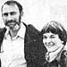

THOUGHTS ON THE DESIGN OF A SANE WORLD: PART I
Paul Ehrlich (Bing Professor of Population Studies and Professor of Biological Sciences, Stanford University) and Anne Ehrlich (Senior Research Associate, Department of Biological Sciences, Stanford) are familiar names to ecologists and environmentalists everywhere. But while most folks are aware of the Ehrlichs' popular writing in the areas of ecology and overpopulation (most of us-for instance-have read Paul's book The Population Bomb), few people have any idea of how deeply the Ehrlichs are involved in ecological research (the type that tends to be published only in technical journals and college texts). That's why we're pleased to present this regular semi-technical column by these well-known authors/ecologists/educators.
"Ecologists," Aldo Leopold once said, "live in a world of wounds that thinks itself whole." That remark, however, no longer holds true. Everywhere there seems to be a ground swell of public opinion reflecting the realization that the world is badly-perhaps mortally -wounded. Indeed, it would be fair to say that no sensible human being today could look at the prospects for our civilization, or even our species, without a sense of foreboding.
The first biennial "Conference on the Fate of the Earth" was convened in New York City in 1982 in recognition of the deep and complex interrelationship between the two greatest threats to the persistence of society: war and environmental destruction. These two forces share roots in the cultural traditions, economic behavior, and technological advances of Western civilization. Indeed, both trace back to the Agricultural Revolution, which some extraterrestrial historian may eventually decide was the first and last big mistake of Homo Sapiens . It was, after all, that revolution that led to cities, kings, empires, science, industry, the population explosion, the emergence of humankind as a global force, and the development of hydrogen bombs. The insanity of the modern world can be traced almost directly to the dissolution of the saner world of hunters and gatherers 10,000 or so years ago.
Agriculture today is obviously a major source of environmental deterioration, and in turn is hurt by it. Soil erosion, salinization, desertification, and air pollution all work to reduce crop yields, increase hunger, and exacerbate the tensions that can lead to wars. And-to look at the other danger addressed by the Conference on the Fate of the Earth-while it's clear that the environmental impacts of "conventional" wars such as the one in Vietnam have been horrendous, the impact of a thermonuclear war would be immeasurably worse.
GROWTH, GREED, AND POWER
A fundamental cause of both current threats to humanity can be seen in the limitless growth-greed-power syndrome that's so basic to society today. Not only do people strive to conquer each other . . . they strive to conquer nature itself. The result is a world in which a wealthy minority attempts to get even richer . . . while the condition of the poor majority barely improves, remains static, or worsens.
It's a world in which our civilization is held hostage by a thermonuclear arsenal capable of destroying it (see "After Nuclear War", MOTHER NO. 84, page 140) . . . an arsenal that's likely to be detonated by what, in historical perspective, can only be viewed as the most trivial of political differences.
Consider, for example, what would have happened if the Romans in the fourth and fifth centuries A.D. had been capable of blowing up the world. At that time, the Roman Empire was a considerably older entity than is either the United States or the Soviet Union today. And by the "better dead than red" standards some people preach nowadays, the Romans would have been completely justified in ending the world if such an action would have prevented a barbarian takeover! Can there be any more insane view than that the political and economic differences between the United States and the Soviet Union are worth canceling posterity for?
Few would disagree that finding a way back to a rational world must now be at the top of the human agenda. But there has been little broad-based discussion of what such a world would look like. Here and in our next two columns, we'll present some thoughts on that world and make suggestions about paths that might lead to it.
FREEDOM, EQUALITY,
AND CHANGE
Let's start by laying out some personal assumptions. We believe that, in any foreseeable future, the tensions between individual freedom and necessary restrictions on it will persist. There's clearly a continuum between living in total freedom and having one's behavior totally constrained by society. Neither extreme is found in any society, human or animal . . . and a moment's reflection will show that, by definition, it would be impossible to have a "society" in which there were no restrictions on individual behavior. The realistic question is, Where on the continuum between the impossible extremes should-or can-a society lie? It's our assumption that most human beings would like the maximum amount of freedom that is possible within constraints that still provide a secure existence.
Similarly, the tensions between equity and inequity will also continue. Absolute equality-or equality of opportunity -for individuals is not found anywhere on the globe. For a genetically variable species such as ours, which lives in a vast array of different habitats, what absolute equality might be cannot be specified even in theory. Nonetheless, we assume that most people would prefer societies in which there's a higher degree of equity-that is, fairness in its broadest sense-than is presently found in, say, Soviet or American society.
We also assume that citizens of a sane world would not operate from sets of fixed "answers" for their problems. Continuous change is a feature of the universe: the solar system, the geology of our planet, and all living systems. In a constantly changing world, people naturally have attempted to find or invent absolutes: religious faiths, political creeds, scientific dogmas, and a myriad of other constructs that can, if simplistically interpreted, be used to eliminate any flexibility of thinking. It would be fatuous to assume that such grasping for certainty would ultimately disappear, but it's reasonable to hope that it could play a smaller role in organizing and governing a sane world. More people would accept the omnipresence of uncertainty in life and learn to deal with it, rather than deny it.
Finally, the sane world we are about to describe is not utopian. Not all misery, inequity, and conflict are banished from it. Creating such a society is clearly not possible on a time scale of interest to those living today. Rational people are not always happy . . . neither would everyone be in a sane world. But reasonable people and societies are not self-destructive, either. In the next few decades, therefore, humanity's task is to move toward a world in which the major trends do not lead to lives of want, hopelessness, and degradation for the vast majority of Homo sapiens.
ZEROING IN
Let's now look at some of the major features of a sane world:
It would be free of war. We purposely say "free of war" and not "free of nuclear war". In our view, nations have no choice but to forego military force as a way of resolving international disputes. There are several reasons for this. First of all, it's already clear that, in the not-too-distant future, virtually all nations who want nuclear arms will be equipped with them . . . and most industrial nations will have thermonuclear arms. Soon enough, all wars, to say nothing of revolutions, will have the potential to become nuclear conflicts. Even if there were full nuclear disarmament, the knowledge of how to make nuclear weapons could never be expunged . . . and in case of war, nuclear arms could be quickly recreated.
Second, although thermonuclear weapons are by far the most destructive ones currently in the human arsenal, both biological and chemical arms have the potential for becoming very nearly as deadly.
Third, although it has not been widely noted, the destructive power of "conventional" weapons has increased enormously since World War II. This destructive capability alone makes doubtful whether conflicts between nations with well-equipped non-nuclear forces could possibly lead to large enough advantages for either nation to compensate for the damage done. In short, it seems more and more apparent that future wars of all sorts will produce no winners . . . only losers.
The suppression of war, therefore, must be the first priority in a sane world, since virtually all wars carry the risk of escalation both in weapons used and areas involved. And it's crystal clear that another full-scale world war would almost surely end civilization, and possibly threaten the survival of humankind itself.
A sane world must have a smaller human population. If war is to be suppressed and our options are to be maximized, the human population must be well below the long-term carrying capacity of Earth. Efforts to support today's population, which has reached 4-2/3 billion, are steadily eroding that carrying capacity. Loss of biological resources, erosion of soils, depletion of freshwater supplies, desertification, and so on are all, at least in part, caused by burgeoning numbers of people seeking increased levels of affluence. Earth is already badly overpopulated. With present and foreseeable technologies, a sustainable global population must be substantially smaller than today's: possibly a billion people . . . or even fewer.
Determining the exact number now, however, is not important. There will be ample time to decide what the optimum size should be, because halting population growth and gradually reducing the numbers of Homo sapiens (by keeping birthrates slightly below death rates) will take several centuries. Eventually, though, humanity can reach a prudent population level. Among other things, society must be designed so that the population size multiplied by the average level of affluence, with that in turn multiplied by the per capita environmental effects of the technologies that supply that prosperity, does not result in environmental impacts that lead to a continuous decline in Earth's carrying capacity.
Some of these ideas were initially presented in a speech to the first biennial "Conference on the Fate of the Earth" in New York City in October 1982. Look for Part II of this discussion in MOTHER NO. 86.
The Ehrlichs' work is supported in part by a grant from the Koret Foundation of San Francisco.
|
 |
|
|